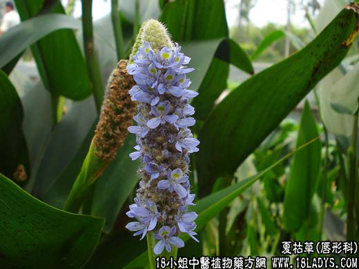

【中药概述】
夏枯草为唇形科草本植物夏枯草的带花果穗。苦、辛、寒。归肝、胆经。
1．清肝火，散郁结：用于肝经火热的目赤肿痛等，常配伍菊花，蒲公英，决明子等同用；如肝热郁结，目痛，至夜尤甚者，可配香附 甘草；用于痰火郁结，可与玄参，浙贝母，昆布，香附
，当归等同用；瘿瘤，常与昆布，海藻配伍，如（<医宗金鉴>夏枯草膏）。
2．清肝明目：用于肝火上炎所致的目赤肿痛等证。可与菊花，石决明，密蒙花等同用；肝阳上亢的头痛、眩晕等，可与石决明，钩藤，天麻等同用。如（<张氏医通>夏枯草散）。
3．用于高血压病，能降血压，对肝火旺、肝阳上亢之高血压病，及高血压眼病均可应用。可配黄芩，菊花，钩藤同用。
【药效鉴别】
夏枯草擅清肝火，为治头痛眩晕、目赤珠痛之要药。又能散郁结，而消瘰疬瘿瘤。
【药理作用】
夏枯草煎剂对痢疾植杆菌、伤寒杆菌、霍乱弧菌、大肠杆菌、绿脓杆菌及人型结核杆菌均有一定的抑制作用。
【化学成分】
含以齐墩果酸为甙元的三萜皂甙等。
【用量用法】
10——100g，水煎服，或入剂。亦可用于外敷。